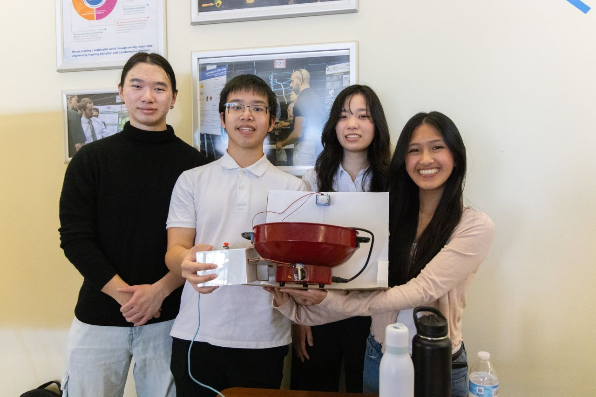

Stove Sensor
Overview
- Designed to address the risk of a stove being accidentally left on, especially for people living with dementia.
- A button attached to the stove knob and a PIR motion sensor work together to sound an alarm when the stove is on and no motion is detected for a set period.
- An Arduino Uno R3 controls the timer, knob state, and alarm behavior.
Methods and Results
- Turning the stove knob releases the attached button and starts the timer.
- The PIR sensor resets the timer when it detects significant movement.
- If the timer reaches its threshold without detected motion, a pulsing alarm sounds to prompt the user to turn off the stove.
Future Work
- Design a sturdier and more precise attachment for the stove knob.
- Develop a more accessible and flexible installation method for different kitchens.
- Explore wireless components to make placement and wiring more flexible.
Poster
